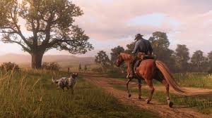

Red Dead Redemption 2 es un videojuego de acción-aventura y mundo abierto desarrollado por Rockstar Games, lanzado en octubre de 2018 para PlayStation 4, Xbox One y Microsoft Windows. Es una secuela de Red Dead Redemption (2010) y la tercera entrega de la serie Red Dead, aunque se sitúa cronológicamente como una precuela de los eventos del primer juego.
¿De qué trata Red Dead Redemption 2?
La historia de Red Dead Redemption 2 sigue a Arthur Morgan, un miembro de la banda Van der Linde, liderada por Dutch van der Linde, un hombre carismático con grandes ideales de libertad. El juego se sitúa en 1899, en los últimos años del Viejo Oeste, cuando los forajidos y las bandas fuera de la ley están siendo desplazados por la expansión del gobierno de los Estados Unidos y el auge de la modernidad.
Al principio del juego, la banda de Dutch se encuentra huyendo tras un robo que salió mal. La historia sigue a Arthur, quien tiene la difícil tarea de mantener a la banda unida mientras lucha con su propia moralidad, lealtad y sentimientos hacia su mentor Dutch. A lo largo del juego, Arthur se ve atrapado entre los viejos valores de la vida de forajido y el creciente sentido de que la vida fuera de la ley está llegando a su fin.
